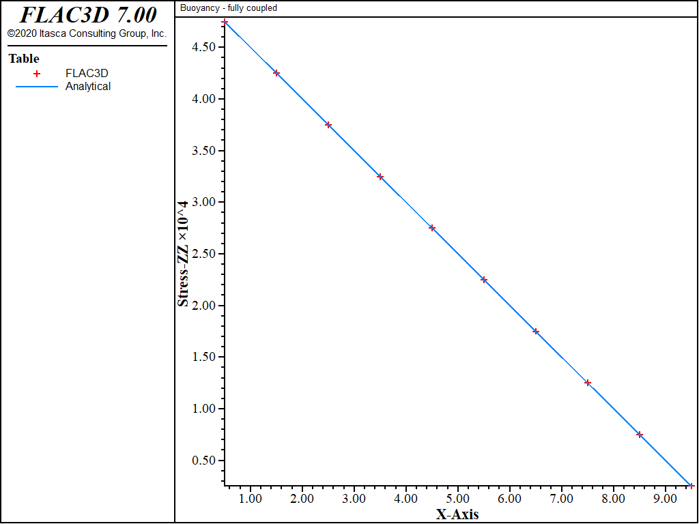
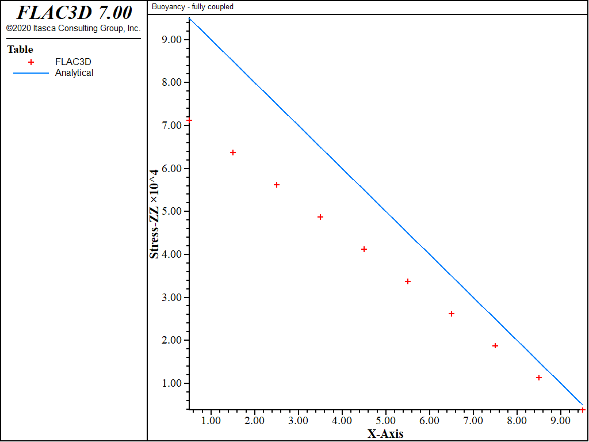
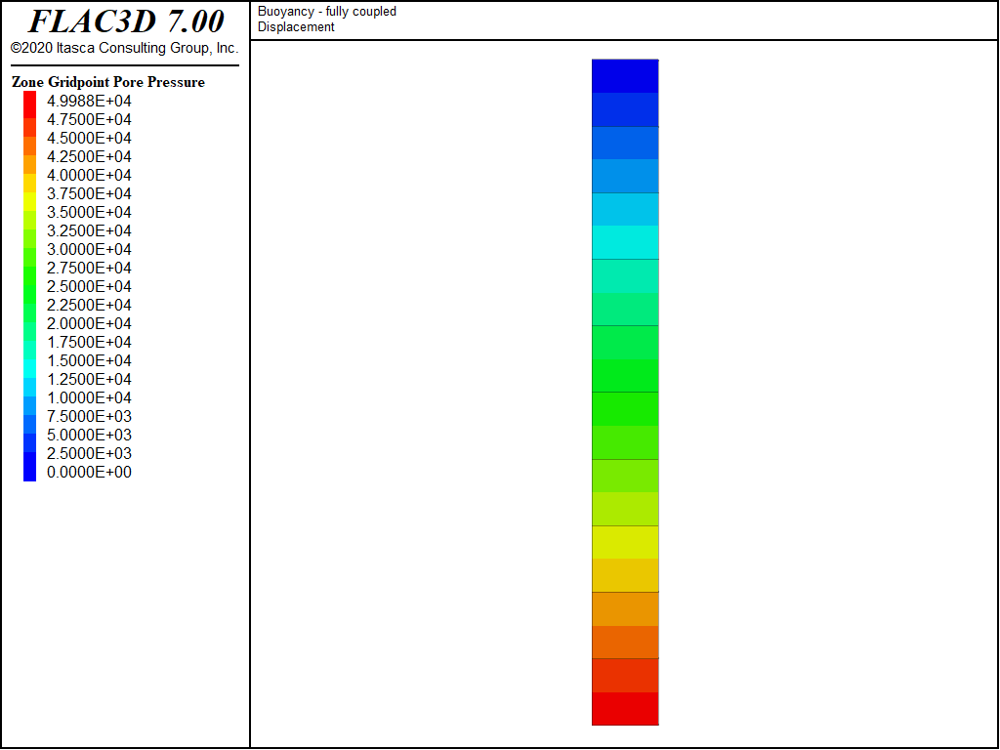
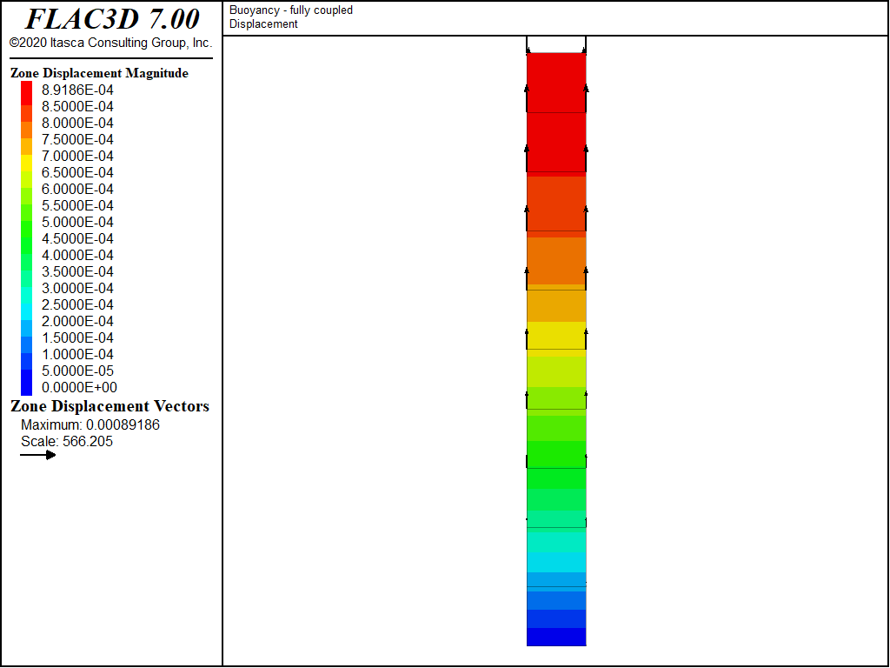
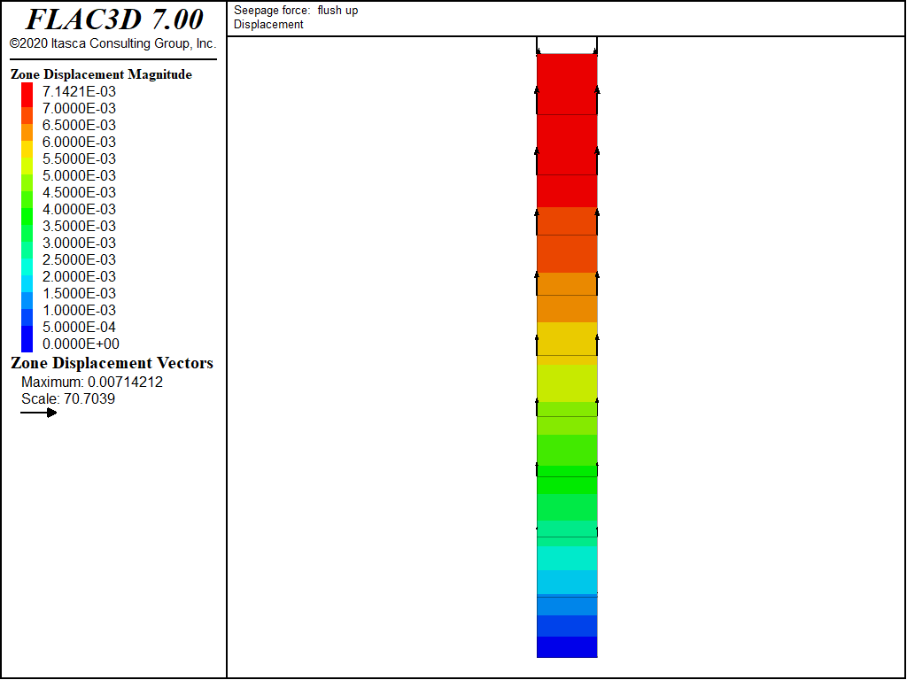
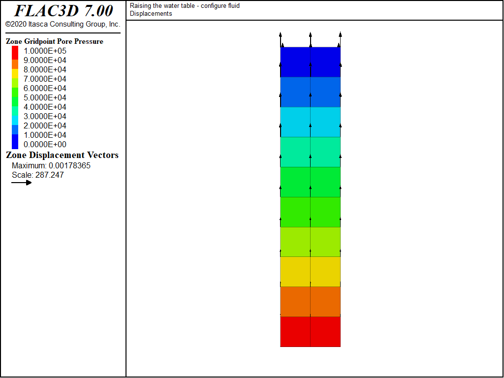
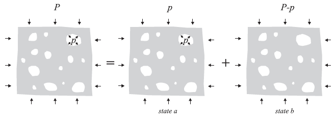

概念验证与特定应用的建模技术
固体重量、浮力与渗流力
按照 Terzaghi（1943）和 Taylor（1948），当流体在多孔介质中流动时，单位体积固体基质上作用着三种力：固体重量、浮力和拖曳力（或称渗流力）（另见 Bear 1972）。这些力在 FLAC3D 公式中被自动计入。可如下说明。
在 FLAC3D 中，平衡用总应力表示：
其中 \(\rho_s\) 是不排水（饱和体积）密度，\(g_i\) 是重力矢量。（请注意，本节各方程适用对重复指标求和的爱因斯坦记号约定。）不排水密度可用排水密度 \(\rho_d\) 和流体密度 \(\rho_w\) 表示为
其中 \(n\) 是孔隙率，\(s\) 是饱和度。有效应力的定义为
其中我们引入了流体容重 \(\gamma_w\) 和测压管水头 \(\phi\)，定义为
而 \(g\) 是重力加速度的大小。
在方程(4)中，项 \(\rho_d g_i\) 可与固体重量相关联，\((1-n) {\partial p \over \partial x_i}\) 与浮力相关联，\(n \gamma_w {\partial \phi \over \partial x_i}\) 与渗流力（拖曳力）相关联。
说明固体重量、浮力与渗流力的简单示例
下面给出一个简单示例，以说明这些各项在 FLAC3D 方法背景下的贡献。考虑横向范围很大、厚度为 \(H\) = 10 m 的土层，其下为刚性基底。该层为弹性，排水体积模量 \(K\) 为 100 MPa，剪切模量 \(G\) 为 30 MPa。干土密度 \(\rho_d\) 为 500 kg/m3。孔隙率 \(n\) 均匀，取值为 0.5。迁移系数 \(k\) 为 10-8 m2/(Pa-s)。流体体积模量 \(K_w\) 为 2 GPa，重力加速度设为 10 m/sec2。
初始时地下水位位于该层底部，土层在重力作用下处于平衡。我们研究水位上升时该层的隆起，以及在竖向水头梯度作用下的隆起或沉降。
该问题为一维问题；FLAC3D 模型是由沿 \(z\) 方向 10 个网格单元组成的单列网格。坐标原点位于模型底部。力学边界条件对应于模型底部和侧面的滚动边界。流体流动边界条件在下面各情形中分别描述。
本例使用地下水配置（配置流体计算模式（model configure fluid））运行。地下水-力学耦合计算采用基本流体流动格式进行。对于这个小模型，计算时间很短；对于更大的模型，可采用解耦建模以加快计算。
作为参考，为将 FLAC3D 结果与解析解比较，该问题条件下的一维增量应力-应变关系为
其中 \(\alpha\) 是 Biot 系数（本次模拟取为 1），\(K\) 是排水体积模量，\(G\) 是剪切模量，\(\epsilon_{zz}\) 是竖向应变。
固体重量——我们首先考虑干层的平衡。赋予材料的干密度，并将饱和度初始化为零（在 配置流体计算模式（model configure fluid） 模式下饱和度的默认值为 1）。关闭流动计算，开启力学计算。将流体体积模量设为零，以防止该阶段体积应变产生任何孔隙压力。使模型循环至平衡。对干介质积分方程(1)，可得
FLAC3D 模拟结束时的竖向应力随高程的变化绘于图 1（Figure 1）。如预期所示，其值与干介质在重力作用下平衡所得的值（方程(8)）相符。


图 1：竖向应力随高程的变化——干层。
模型顶部的竖向位移由该方程求得。
该阶段 FLAC3D 的计算值与解析值（-1.786 × 10-3 m）相符。请注意，为在本例中达到这一精度，平衡比限值（模型求解力学比（model solve mechanical ratio））已降低到 10-6。
浮力——我们将地下水位升至模型顶部以继续该示例。将位移重置为零，并赋予上文所列流体性质。模型顶部的孔隙压力固定为零，整个网格的饱和度初始化为 1。（请注意，若从初始饱和度 1 而非零饱和度开始，流体流动计算至稳态会更快。）该计算阶段流体流动模式和力学模式均开启，并进行耦合计算以达到稳态。程序在该计算中使用饱和密度，该密度由方程(2)（在内部）确定。对饱和介质积分方程(1)，可得
FLAC3D 与方程(10)所得总竖向应力剖面的比较见图 2（Figure 2）：


图 2：竖向应力随高程的变化——饱和层。
在稳态下，孔隙压力为静水压力：
稳态孔隙压力云图如图 3（Figure 3）所示。


图 3：饱和层稳态孔隙压力云图。
由抬升地下水位引起的竖向位移现在向上。 隆起量从方程(7)开始计算。 我们将该方程写成如下形式
对于本示例，\(p^{(1)}\) = 0。 将方程(8)、方程(10)和方程(11)代入方程(12)后， 经适当整理可得，
\((\rho_s - \rho_w)\) 项即浮密度。 将方程(2)中的不排水密度代入方程(13)可得
最后，在 0 与 H 之间积分后可得
而对于 \(z = H\)，由此得到
模型顶部的最终数值位移与解析值（+1.786 × 10-3 m）吻合良好。 向上引起的位移绘制于图 4（Figure 4）中：


图 4：饱和层稳态下的土层隆起。
地下水位进一步抬升——我们从此阶段继续，模拟水位进一步抬升对土层的影响。 这一次，地下水位抬升至模型顶部以上 20 m。 相应的静水压力为 \(p = \rho_w g h\)，其中 \(h\) 为 20 m，\(p\) = 0.2 MPa。
我们将位移重置为零，并在模型顶部施加 0.2 MPa 的压力。
沿顶部边界施加流体孔隙压力（使用 单元网格点固定孔隙压力（zone gridpoint fix pore-pressure） 2e5），
同时施加力学压力（使用 zone face apply stress-normal）。
现在我们再执行一次耦合计算，增加 500 秒的流体流动时间。
模型不再产生进一步移动。
这是因为 \(\sigma_{zz}\) 的绝对增量被孔隙压力的增量所平衡，且 Biot 系数设为 1。
因此不产生位移。
在本阶段结束时，静水孔隙压力由下式给出
其中 \(p_b^{(3)}\) 为土层底部的流体压力，\(p_t\) 为顶部的压力。 对于本例，\(p_b^{(3)}\) = 0.3 MPa，\(p_t\) = 0.2 MPa。
渗透力（向上渗流）——现在研究土层底部与高渗透性超压含水层接触的情形。
含水层中的压力为 0.5 MPa。
从前一阶段继续，将位移重置为零，并在底部施加 0.5 MPa 的孔隙压力
（单元网格点固定孔隙压力（zone gridpoint fix pore-pressure） 5e5）。
执行力学-流动耦合计算直至达到稳态。
本阶段的位移矢量图（图 5（Figure 5））
表明向上渗流引起了隆起。


图 5：稳态下的土层隆起——超压含水层的渗透力。
隆起量的解析解可由方程(7)计算。 总应力没有变化，因此 \(\Delta \sigma_{zz}\) 项被消去。 此外，Biot 系数等于 1。因此可写为
其中 \(p^{(3)}\) 由方程(17)给出， 而 \(p^{(4)}\) 是本阶段结束时的稳态孔隙压力分布。该孔隙压力由下式给出
其中 \(p_b^{(4)}\) = 0.5 MPa。 将方程(19)和方程(17)代入方程(18)， 并进一步积分可得
对于 \(y\) = \(H\)，可得
FLAC3D 计算的地表隆起结果与该结果直接吻合（\(u\) = 7.143 × 10-3 m）。
渗透力（向下渗流）——对土层底部与高渗透性负压含水层接触的情形重复渗透力算例。 这一次，在底部指定压力值 \(p_b^{(5)}\) = 0.1 MPa。 重置位移后进行耦合计算。 该情形下土层发生沉降，可从图 6（Figure 6）中的位移矢量图看出。 将 \(p_b^{(5)}\) 替换为 \(p_b^{(4)}\) 后，位移的解析值可由方程(21)导出。 FLAC3D 计算的沉降与解析沉降 \(u\) = -7.143 × 10-3 m 吻合良好。

相应的项目文件 “WeightBuoyancySeepage.f3prj” 位于 “datafiles\fluid\WeightBuoyancySeepage” 文件夹中。 下面是数据文件。
WeightBuoyancySeepage.dat：
;; 固体自重、浮力和渗流力
model new
model title 'Buoyancy - fully coupled'
model large-strain off
fish automatic-create off
model configure fluid
program call 'fishFunctions'
[setup]
zone create brick size 1 1 10
zone cmodel assign elastic
zone fluid cmodel assign isotropic
zone property bulk [m_bu] shear [m_sh]
zone initialize density [m_d]
; ---（柱体为干燥状态）---
zone gridpoint initialize saturation 0
; --- 边界条件 ---
zone face apply velocity-x 0 range union position-x 0 position-x 1
zone face apply velocity-y 0 range union position-y 0 position-y 1
zone face apply velocity-z 0 range position-z 0
; --- 重力 ---
model gravity 0 0 [mgrav]
; --- 历史 ---
fish history num_dis
fish history ana_dis1
; --- 初始平衡
model fluid active off
model fluid mechanical on
model solve
fish list [num_dis] [ana_dis1]
model save 'ini'
; --- 完全耦合 ---
model restore 'ini'
model title 'Buoyancy - fully coupled'
zone gridpoint initialize displacement (0,0,0)
history delete
; --- 历史 ---
fish history num_dis
fish history ana_dis2
model history fluid time-total
; --- 加水 ---
zone initialize fluid-density=500.0
zone gridpoint initialize saturation 1
zone gridpoint initialize fluid-modulus=2e8
zone gridpoint initialize fluid-tension=-1e10
zone fluid property porosity=[m_n] permeability 1e-8
; --- 边界条件 ---
zone gridpoint fix pore-pressure 0 range position-z 10
; --- 静力平衡 ---
model fluid active on
model mechanical active on
model mechanical substep 10
model mechanical slave
model fluid substep 256
; --- 可按以下方式进行耦合模拟 ---
model solve fluid time-total 300 or mechanical ratio 1e-6
fish list [num_dis] [ana_dis2]
model save 'ex1a'
; --- 非耦合 ---
model restore 'ini'
model title 'Buoyancy - uncoupled'
zone gridpoint initialize displacement (0,0,0)
history delete
; --- 加水 ---
zone gridpoint initialize saturation 1
zone initialize fluid-density=[w_d]
zone gridpoint initialize fluid-modulus=2e8
zone gridpoint initialize fluid-tension=-1e10
zone fluid property porosity=[m_n] permeability 1e-8
; --- 边界条件 ---
zone gridpoint fix pore-pressure 0 range position-z 10
; --- 静力平衡 ---
model fluid active on
model mechanical active off
; --- 可按以下方式进行非耦合模拟 ---
model solve fluid time-total 300
; --- 历史 ---
fish history num_dis
fish history ana_dis2
model fluid active off
model mechanical active on
zone gridpoint initialize fluid-modulus 0
model solve ratio 1e-6
fish list [num_dis] [ana_dis2]
model save 'ex1b'
; --- 进一步下沉至 20 m 深的水下 ---
model restore 'ex1b'
zone gridpoint initialize fluid-modulus 2e8
model title 'Sink it deeper, under 20m of water'
zone gridpoint initialize displacement (0,0,0)
history delete
; --- 流体边界条件 ---
zone gridpoint fix pore-pressure 2e5 range position-z 10
; --- 施加水压力 ---
zone face apply stress-normal -2e5 range position-z 10
; --- 静力平衡 ---
; --- 可按以下方式进行非耦合模拟 ---
model fluid active on
model mechanical active off
model solve fluid time-total 600
; --- 历史 ---
fish history num_dis
fish history ana_dis3
model fluid active off
model mechanical active on
zone gridpoint initialize fluid-modulus 0
model solve ratio 1e-6
fish list [num_dis] [ana_dis3]
model save 'ex1c'
; --- 渗流力：向上冲流 ---
model restore 'ex1c'
zone gridpoint initialize fluid-modulus 2e8
model title 'Seepage force: flush up'
zone gridpoint initialize displacement (0,0,0)
history delete
; --- 使流体向上流动 ---
zone gridpoint fix pore-pressure 5e5 range position-z 0
; --- 静力平衡 ---
; --- 可按以下方式进行非耦合模拟 ---
model fluid active on
model mechanical active off
model solve fluid time-total 1200
; --- 历史 ---
fish history num_dis
fish history ana_dis4
model fluid active off
model mechanical active on
zone gridpoint initialize fluid-modulus 0
model solve ratio 1e-6
fish list [num_dis] [ana_dis4]
model save 'ex1e'
; --- 渗流力：向下冲流 ---
model restore 'ex1c'
zone gridpoint initialize fluid-modulus 2e8
model title 'Seepage force: flush down'
zone gridpoint initialize displacement (0,0,0)
history delete
; --- 使流体向上流动 ---
zone gridpoint fix pore-pressure 1e5 range position-z 0
; --- 静力平衡 ---
; --- 可按以下方式进行非耦合模拟 ---
model fluid active on
model mechanical active off
model solve fluid time-total 1200
; --- 历史 ---
fish history num_dis
fish history ana_dis5
model fluid active off
model mechanical active on
zone gridpoint initialize fluid-modulus 0
model solve ratio 1e-6
fish list [num_dis] [ana_dis5]
model save 'ex1f'
孔隙压力初始化与变形
在 FLAC3D 中，当使用 zone initialize 命令在模型中初始化平衡应力时
（例如按照 带梯度的应力——均质材料（Stresses with Gradients — Uniform Material） 中所述的步骤），
并执行力学计算步时，程序不会计算应力增量，
因此不会产生位移，因为模型在应力边界条件和施加的荷载下处于平衡。
换言之，使用 单元初始化应力（zone initialize stress） 命令时，FLAC3D 不计算与施加平衡应力相关的变形。
如果在计算开始时以这种方式设置应力状态，则初始应力状态被作为位移的参考状态。
（这一点值得注意，因为其逻辑可能与其他程序不同，
在其他程序中零应力状态被作为位移计算的参考。）
流体-力学模拟中孔隙压力的情形与此类似：
默认情况下，如果使用 单元网格点初始化孔隙压力（zone gridpoint initialize pore-pressure） 命令初始化孔隙压力，
使其与流体边界条件和水力荷载相平衡，并执行流体计算步，
那么默认情况下程序不会产生孔隙压力增量。
如果在计算开始时执行 单元网格点初始化孔隙压力（zone gridpoint initialize pore-pressure） 命令，
则该初始状态被作为孔隙压力的参考状态。
由于程序不计算孔隙压力增量，孔隙压力初始化不会引起应力变化
（如果执行力学计算步，也不会引起位移）。
换言之，默认情况下，使用 单元网格点初始化孔隙压力（zone gridpoint initialize pore-pressure） 命令时，FLAC3D 不计算与施加平衡孔隙压力相关的变形。
默认情况下，这仅适用于使用 单元网格点初始化孔隙压力（zone gridpoint initialize pore-pressure） 命令、zone water 命令或 FISH 函数初始化孔隙压力所建立的平衡孔隙压力。
另一方面，由 FLAC3D 计算得到的孔隙压力变化
总是会产生应力变化；
如果应力变化使系统偏离平衡并执行力学计算步，
则在条件允许时会产生变形。
如果需要计算与新的孔隙压力分布相关的变形（该分布使用 单元网格点初始化孔隙压力（zone gridpoint initialize pore-pressure） 命令、zone water 命令或 FISH 函数初始化孔隙压力来赋值），
则需要采用专门的应力修正技术。
该技术包括
1）从总法向应力中减去受变化影响的网格单元内的孔隙压力增量乘以 Biot 系数（网格单元内的孔隙压力增量通过对节点值取平均计算），
2）将干燥区的饱和度调整为 0，将充液区的饱和度调整为 1，
3）将输入材料密度调整为潜水面（若存在）上下的体积密度，并使用 配置流体计算模式（model configure fluid） 进行模拟，以及
4）循环模型至力学平衡。
下面给出一个简单示例，说明使用该技术时土层的隆起。
土层的隆起
在本示例中，考虑一层横向范围很大、厚度为 \(H\) = 10 米的土层，其下为刚性基座。 该土层为弹性材料，排水体积模量 \(K\) 为 100 MPa，剪切模量 \(G\) 为 30 MPa。 干土的体积密度 \(\rho\) 为 1800 kg/m3，水的密度 \(\rho_w\) 为 1000 kg/m3。 孔隙率 \(n\) 均匀，其值为 0.5。重力设为 10 m/sec2。
初始时地下水位位于土层底部，土层在重力作用下处于平衡。
我们评估水位抬升至地表时土层的隆起。
这一简单问题与 固体重量、浮力与渗透力（Solid Weight, Buoyancy and Seepage Forces） 一节中分析的问题类似。
区别在于，此处不要求程序求新的孔隙压力分布。
模拟可以在使用或不使用地下水配置（配置流体计算模式（model configure fluid））的情况下进行。
我们考虑这两种情况。
本示例的网格包含 20 个网格单元：沿 \(z\) 方向 10 个，沿 \(x\) 方向 2 个，沿 \(y\) 方向 1 个。 坐标原点位于模型底部。 力学边界条件为模型底部和侧面的滚轴边界。
我们首先考虑干燥土层的平衡。
使用 单元初始化应力 xx 分量（zone initialize stress-xx）、单元初始化应力 yy 分量（zone initialize stress-yy） 和 初始化单元 zz 向应力命令（zone initialize stress-zz） 命令初始化应力，
静止土压力系数 \(k_o\) 取值为 0.5714（等于 (\(K-2G/3\))/(\(K+4G/3\))）。
水位抬升对变形有两个相互竞争的影响： 第一，孔隙压力增加会产生土层隆起；以及 第二，孔隙中水的存在使土体体积密度增加，将引起沉降。 为模拟水位抬升至地表对变形的综合影响，我们按如下步骤进行。
如果不使用 配置流体计算模式（model configure fluid），
我们通过 单元网格点初始化孔隙压力（zone gridpoint initialize pore-pressure） 命令或 zone water 命令指定与新水位对应的静水孔隙压力分布，
并且为新水位以下的土体指定湿体积密度。
我们使用以下命令施加上述第 1）点所述的应力修正，
zone initialize stress-xx -1e5 add grad 0 0 1e4
zone initialize stress-yy -1e5 add grad 0 0 1e4
zone initialize stress-zz -1e5 add grad 0 0 1e4
最后，我们循环模型至静力平衡。
如果使用 配置流体计算模式（model configure fluid），
我们同样使用 单元网格点初始化孔隙压力（zone gridpoint initialize pore-pressure） 或 zone water 命令指定与新水位对应的静水孔隙压力分布。
水位以下饱和度初始化为 1，以上初始化为 0。
但是，我们不更新土体密度以考虑新水位以下水的存在（这由程序自动完成）。
我们再次执行前述的应力修正。
最后，我们将 模型流体活动命令（model fluid active） 关闭（off），并循环模型至静力平衡。
两种情况下最终响应相同。 图 7（Figure 7） 中的位移矢量图表明地下水位抬升引起了土层隆起。 地表隆起 \(u_h\) 可使用方程(22)进行解析计算，
其中 \(\alpha_1 = K + 4G/3\)。 \(u_h\) 的理论值为 1.786 × 10-3 米。 理论值与数值值吻合良好。 模拟所用的数据文件列于 SoilLayerHeave-NoFluid.dat 数据文件（SoilLayerHeave-NoFluid.dat） 和 SoilLayerHeave-withFluid.dat 数据文件（SoilLayerHeave-withFluid.dat） 中。


图 7：土层隆起。
SoilLayerHeave-NoFluid.dat：
model new
model large-strain off
model title 'Raising the water table - not in configure fluid'
fish automatic-create off
program call 'fishFunctions'
[setup]
zone create brick point 0 (0,0,0) point 1 (2,0,0) point 2 (0,1,0) ...
point 3 (0,0,10) size 2 1 10 ratio 1 1 1
zone cmodel assign elastic
zone property bulk [m_bu] sh [m_sh]
; --- 柱体为干燥状态 ---
zone property density [m_d]
; --- 边界条件 ---
zone face apply velocity-z 0 range position-z 0
zone face apply velocity-x 0 range union position-x 0 position-x 2
zone face apply velocity-y 0 range union position-y 0 position-y 1
; --- 重力 ---
model gravity 0 0 [mgrav]
; --- 历史 ---
history interval 10
zone history displacement-z position (0,0,10)
fish history ana_dis
; --- 初始平衡 ---
zone initialize stress-zz -1.8e5 grad 0 0 1.8e4
zone initialize stress-xx -1.029e5 grad 0 0 1.029e4
zone initialize stress-yy -1.029e5 grad 0 0 1.029e4
model solve ratio 1e-6
model save 'ini'
; --- 抬升水位 ---
; （注意：未配置 FLUID 时，按以下方式设置水的密度：）
zone water density [w_d]
; （可以使用这种方式……）
zone gridpoint initialize pore-pressure 1e5 grad 0 0 -1e4
; （也可以使用这种方式……）
;water table origin 0 0 _H normal 0 0 -1
; （调整总应力）
zone initialize stress-xx -1e5 add grad 0 0 1e4
zone initialize stress-yy -1e5 add grad 0 0 1e4
zone initialize stress-zz -1e5 add grad 0 0 1e4
; --- 地下水位以下采用湿密度 ---
zone property density [m_rho]
; --- 静力平衡 ---
model solve ratio 1e-6
model save 'ncfl'
SoilLayerHeave-withFluid.dat：
model new
model title 'Raising the water table - configure fluid'
model large-strain off
fish automatic-create off
model configure fluid
program call 'fishFunctions'
[setup]
zone create brick point 0 (0,0,0) point 1 (2,0,0) point 2 (0,1,0) ...
point 3 (0,0,10) size 2 1 10 ratio 1 1 1
zone cmodel assign elastic
zone fluid cmodel assign isotropic
zone property bulk [m_bu] sh [m_sh]
; --- 柱体为干燥状态 ---
; （将饱和度 sat 初始化为 0）
zone gridpoint initialize saturation 0
zone property density [m_d]
; --- 边界条件 ---
zone face apply velocity-z 0 range position-z 0
zone face apply velocity-x 0 range union position-x 0 position-x 2
zone face apply velocity-y 0 range union position-y 0 position-y 1
; --- 重力 ---
model gravity 0 0 [mgrav]
; --- 历史 ---
history interval 10
zone history displacement-z position (0,0,10)
fish history ana_dis
; --- 初始平衡 ---
zone initialize stress-zz -1.8e5 grad 0 0 1.8e4
zone initialize stress-xx -1.029e5 grad 0 0 1.029e4
zone initialize stress-yy -1.029e5 grad 0 0 1.029e4
;
model fluid active off
model mechanical active on
zone gridpoint initialize fluid-modulus 0
model solve
model save 'ini'
; --- 抬升水位 ---
; （将水位以下的饱和度 sat 初始化为 1）
zone gridpoint initialize saturation 1
; （注意：配置 FLUID 后，按以下方式设置水的密度：）
zone initialize fluid-density [w_d]
; （可以使用这种方式……）
zone gridpoint initialize pore-pressure 1e5 grad 0 0 -1e4
; （也可以使用这种方式……）
; （注意：配置 fluid 后可以使用 water table 命令，
; 这一点与 FLAC 不同）
;water table origin 0 0 _H normal 0 0 -1
; （调整总应力）
zone initialize stress-xx -1e5 add grad 0 0 1e4
zone initialize stress-yy -1e5 add grad 0 0 1e4
zone initialize stress-zz -1e5 add grad 0 0 1e4
; --- 注意：无需为地下水位以下另行指定湿密度 ---
; --- 静力平衡 ---
model fluid active off mech on
zone gridpoint initialize fluid-modulus 0
model solve
model save 'cfl'
Biot 系数的影响
Biot 系数 \(\alpha\) 将颗粒的可压缩性与排水体积材料的可压缩性联系起来：
其中 \(K\) 为基质的排水体积模量，\(K_s\) 为颗粒的体积模量 （参考文献见 Detournay and Cheng 1993）。
对于土体，基质柔度通常远高于颗粒柔度（即 \(1/K >>> 1/K_s\)）， 因此假定 Biot 系数等于 1 是合理的近似。
然而对于多孔岩石，基质柔度与岩石柔度通常处于同一量级， 因此 Biot 系数可能几乎为零。 例如，考虑一个多孔弹性岩石试样。 孔隙中充满压力为 \(p\) 的流体，周边施加总外压力 \(P\) （即施加在不透水套筒的外侧）。 该问题可通过两个应力状态的叠加来分析：状态 a， 其中流体压力和外压力均等于 \(p\)；以及 状态 b， 其中孔隙压力为零，外压力为 \(P - p\)（见图 8（Figure 8））。


图 8：作用于多孔弹性岩石的应力分解。
状态 a的应力-应变关系可表示为
对于状态 b（无流体），可写为
总应变由状态 a和状态 b的应变叠加给出：
将方程(24)中的 \(\epsilon_a\) 和方程(26)中的 \(\epsilon_b\) 代入后可得
经适当整理，应力-应变方程化为如下形式
显然，在 Biot 理论的框架下， Biot 系数为零意味着弹性应力-应变规律变得与孔隙压力无关。 当然，一般而言多孔岩石并不表现弹性行为， 且孔隙压力对破坏有影响。 此外，如果岩石中的流体流动主要发生在裂隙中，Biot 理论可能不适用。 尽管如此，有许多情形可以用 Biot 系数较小来解释 为何孔隙压力对致密多孔（即未破裂）岩石的变形影响很小。 （例如，在致密多孔岩体中抬升或降低地下水位对地表沉降的影响可能难以察觉。）
请注意，上述讨论只涉及颗粒可压缩性的一个效应。 Biot 系数也出现在流体本构规律中，该规律将流体含量的变化与体积应变联系起来。
FLAC3D 中实现了在 Biot 理论框架下建立的颗粒可压缩性逻辑。 下面描述简单的验证示例以说明该逻辑。
作为参考，在下面的示例中，当特殊情形 \(\Delta \epsilon_{yy}\) = 0 时， 主应力-应变关系具有如下形式
其中 \(\Delta \xi\) 为单位体积多孔介质中流体含量的变化，\(\Delta \epsilon_v\) 为体积应变增量。
不排水固结仪试验
对饱和孔隙弹性试样进行不排水固结试验（oedometer）。
本试验中 Biot 模量为 1 MPa，Biot 系数为 0.3。
模型为单个单位尺寸的方形网格单元，侧面和底部为滚轴边界。
在顶部施加恒定速度 \(v\)。
关闭流体流动，运行模拟 10 个计算步。
给出 单元流体比奥（zone fluid biot） 开启（on） 命令，以选择 Biot 模量和系数而不是流体体积模量。
由于试样在侧向受限，\(\Delta \epsilon_{xx}\) = \(\Delta \epsilon_{yy}\) = 0，且 \(\Delta \epsilon_v = \Delta \epsilon_{zz}\)。 对于不排水条件，\(\Delta \xi\) = 0。 于是孔隙压力的解析值（见方程(31)）为
将孔隙压力和应变分量代入 方程(29)和方程(30)，可得解析应力：
经过 10 个计算步后，\(\Delta \epsilon_{zz} = -10v\)。 使用 FISH 函数 检查（checkit） 检查孔隙压力和应力的解析值与数值值的一致性。 解析结果与数值结果完全相同。 相应的项目文件 “UndrainedOedometer.f3prj” 位于 “datafiles\Fluid\UndrainedOedometer” 文件夹中。 下面是数据文件：
UndrainedOedometer.dat：
; 不排水固结仪试验
model new
model title 'Undrained Oedometer test'
model large-strain off
fish automatic-create off
model configure fluid
zone create brick point 0 (0,0,0) point 1 (1,0,0) ...
point 2 (0,1,0) point 3 (0,0,1) size 1 1 1
zone cmodel assign elastic
zone fluid cmodel assign isotropic
zone property bulk 1e8 shear 0.3e8
zone gridpoint initialize fluid-tension -1e10
zone fluid biot on
zone fluid property porosity=0.5 biot=0.3
; --- 边界条件 ---
zone gridpoint fix velocity
zone gridpoint initialize velocity-z=-1e-3 range position-z 1
; --- 不排水压缩 ---
zone gridpoint initialize biot=1e8
model fluid active off
model mechanical active on
model step 10
受限试样中的孔隙压力生成
以不透水套筒中的受限试样为例说明孔隙压力生成的效应。 试样几何与性质与前一个示例 不排水固结试验（Undrained Oedometer Test） 相同。 模型四个侧面均设置滚轴边界。这些边界（默认情况下）也是不透水的。 开启流体流动，并对模型施加单位流速的体积水源以提高孔隙压力。 运行模拟 10 个流体流动步。
在模拟结束时，\(\Delta \xi = 10\Delta t\)。 网格完全受约束，因此 \(\Delta \epsilon_{xx} = \Delta \epsilon_{yy} = \Delta \epsilon_{zz} = \Delta \epsilon_v = 0\)。 由方程(31)得到孔隙压力的解析值为
使用 FISH 函数 检查（checkit） 比较孔隙压力和应力的数值值与解析值， 结果完全相同。 相应的项目文件 “PorePressureGenerationConfined.f3prj” 位于 “datafiles\Fluid\PorePressureGenerationConfined” 文件夹中。 下面是数据文件：
PorePressureGenerationconfined.dat：
; “受约束试样中的孔隙压力生成”所用文件
model new
model title 'Pore pressure generation in a confined sample'
fish automatic-create off
model configure fluid
zone create brick point 0 (0,0,0) point 1 (1,0,0) point 2 (0,1,0) ...
point 3 (0,0,1) size 1 1 1
zone cmodel assign elastic
zone fluid cmodel assign isotropic
zone property bulk 1e8 shear 0.3e8
zone gridpoint initialize fluid-tension -1e10
zone fluid biot on
zone fluid property porosity=0.5 biot=0.3 permeability=1e-10
zone gridpoint initialize biot=1e8
; --- 边界条件 ---
zone gridpoint fix velocity
; --- 水源 ---
zone apply well 1.0
model fluid active on
model mechanical active off
model step 10
无限层中的孔隙压力生成
本示例与前述受限试样类似，只是顶部边界不受约束。 所有边界均不透水，并施加单位流量的体积水源以提高孔隙压力。 力学计算与流体流动计算均开启，运行模拟 10 个流体流动步。 请注意，每个流体步执行 200 个力学子步，以使系统保持在准静态平衡状态。
对于本示例，\(\Delta \epsilon_{xx} = \Delta \epsilon_{yy} = 0\)、 \(\Delta \epsilon_v = \Delta \epsilon_{zz}\) 和 \(\Delta \sigma_{zz} = 0\)。 将这些条件代入方程(30)可得
将方程(37)代入方程(31)中的 \(\Delta p\) 并求解 \(\epsilon_{zz}\)，可得
现在可由方程(29)和方程(31)导出孔隙压力和应力的解析表达式：
使用 FISH 函数 检查（checkit） 比较竖向位移、孔隙压力和应力的数值值与解析值， 结果完全相同。 相应的项目文件 “PorePressureGenerationInfinite.f3prj” 位于 “datafiles\Fluid\PorePressureGenerationInfinite” 文件夹中。 下面是数据文件：
PorePressureGenerationinfinite.dat：
; “无限层中的孔隙压力生成”所用文件
model new
model large-strain off
model title 'Pore pressure generation in an infinite layer'
fish automatic-create off
model configure fluid
zone create brick point 0 (0,0,0) point 1 (1,0,0) point 2 (0,1,0) ...
point 3 (0,0,1) size 1 1 1
zone cmodel assign elastic
zone fluid cmodel assign isotropic
zone property bulk 2.0 shear 1.0
zone gridpoint initialize fluid-tension -1e10
zone fluid biot on
zone fluid property porosity=0.5 biot=0.3 permeability=1.0
zone gridpoint initialize biot=1
; --- 边界条件 ---
zone gridpoint fix velocity-x
zone gridpoint fix velocity-y
zone gridpoint fix velocity-z range position-z 0
; --- 水源 ---
zone apply well 1.0
model fluid active on
model mechanical active on
model fluid substep 1
model mechanical substep 200
model mechanical slave
model solve fluid time-total 1.6 or mechanical ratio 1e-10
;
model save 'ppgen-infinite'
| 这些内容对您有帮助吗？… | FLAC3D © 2019, Itasca | 原文更新于 2020 年 10 月 8 日 |